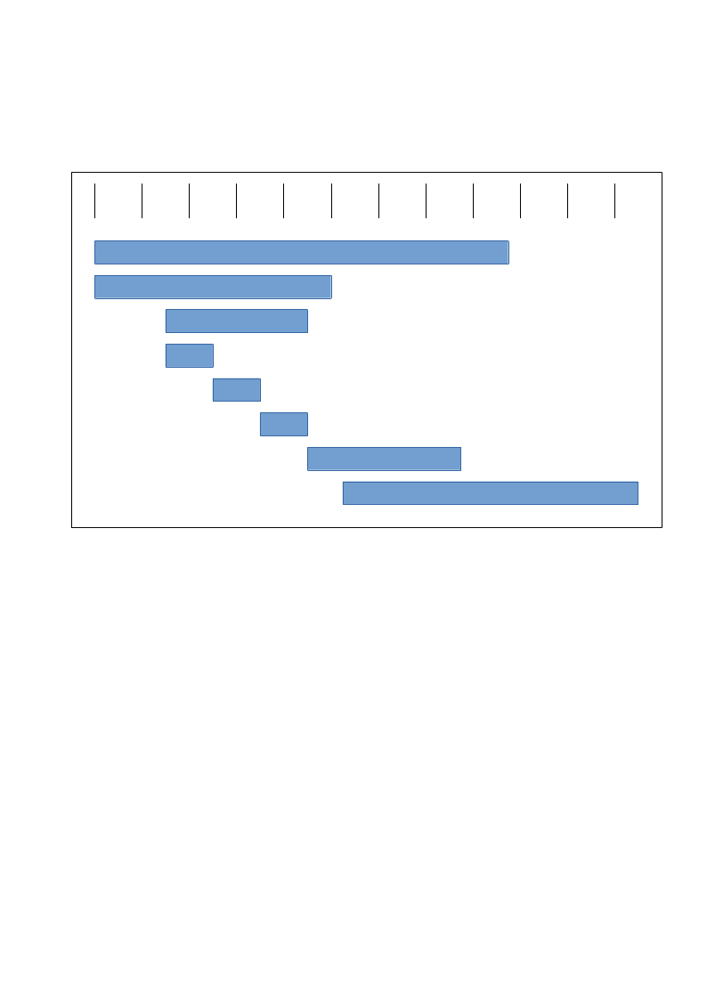
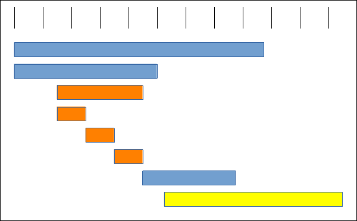
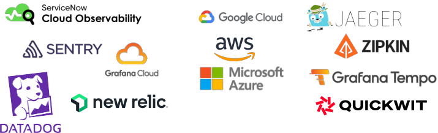
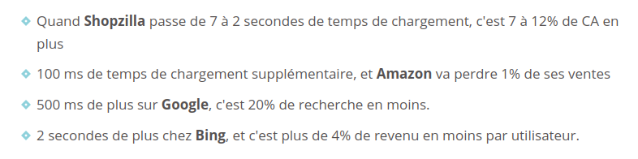
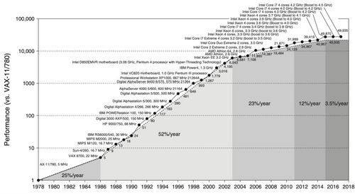

De
"0" à "tracing distribué"
en quelques lignes de code,
c'est possible !
Vincent Lepot - 10 Octobre 2024
Imaginons une application !
Comment est-on organisé ?
Equipe catalogue de films
Equipe gestion des utilisateur·ice·s
Equipe gestion des listes
Equipe expérience utilisateur·ice·s
Comment est architecturée notre application ?
Qui connait la loi de Conway ?
Loi de Conway
« Toute organisation qui conçoit un système, au sens large, concevra une structure qui sera la copie de la structure de communication de l'organisation. »
- Melvin Conway, 1967
Source : https://fr.wikipedia.org/wiki/Loi_de_Conway
Notre organisation
Equipe catalogue de films
Equipe gestion des utilisateur·ice·s
Equipe gestion des listes
Equipe expérience utilisateur·ice·s
Notre architecture
lesfilmsquejekiffe
Catalog service
User service
Favlist service
Vous voulez voir à quoi ça ressemble ?
2 problèmes !
- Problème de performance
- Erreur quelque part
Une trace c'est quoi ?
Une trace c'est quoi ?
Et une trace distribuée c'est quoi ?
Et une trace distribuée c'est quoi ?
OpenTelemetry
OpenTelemetry
https://www.youtube.com/watch?v=gnKm6qByGAYOpenTelemetry
- Projet créé en 2019
- Standard : Protocole OTLP
- Fournit un Collector
4 étapes !
Etape 1 : Choisir notre backend de stockage
Etape 1 : Choisir notre backend de stockage

Etape 1 : Choisir notre backend de stockage

Etape 2 : Installer les extensions PHP nécessaires
Etape 2 : Installer les extensions PHP nécessaires
3 transports possibles pour OTLP
GRPC
HTTP / JSON
HTTP / PROTOBUF
Etape 2 : Installer les extensions PHP nécessaires
opentelemetry
Etape 2 : Installer les extensions PHP nécessaires
opentelemetry
<?php
OpenTelemetry\Instrumentation\hook(
DemoClass::class,
'run',
pre: ...,
post: ...
);
Etape 2 : Installer les extensions PHP nécessaires
opentelemetry
- Nécessite PHP 8.0+
- Basé sur l'Observer API (https://www.datadoghq.com/blog/engineering/php-8-observability-baked-right-in/)
Etape 3 : Installer les packages d'auto-instrumentation
Etape 3 : Installer les packages d'auto-instrumentation
Liste des packages d'Instrumentation OpenTelemetry
https://packagist.org/search/?query=open-telemetry&tags=instrumentation
Etape 4 : Configurer OpenTelemetry dans les applications
Pourquoi la recherche de performance ?
1.
Améliorer l'expérience utilisateur
2.
Améliorer la performance économique
2.
Améliorer la performance économique

Source - https://www.seomix.fr/temps-chargement/ (23/07/2010)
Et surtout 3.
Augmenter la durée de vie du matériel
Loi de Moore
« Le nombre de transistors dans un semiconducteur double tous les 2 ans »
- Gordon E. Moore, 1975
Source : https://fr.wikipedia.org/wiki/Loi_de_Moore
La loi de Moore est morte, vive La loi d'erooM
Source : Computer Architecture: A Quantitative Approach, sixth edition
A lire : La loi de Moore est morte et c'est une bonne nouvelle de Tristan Nitot
Optimisez votre code !
Merci ☺️

Vincent Lepot
@zibok@pouet.chapril.org
Slides
https://zibok.github.io/slides-opentelemetry-forumphp2024/
https://zibok.github.io/slides-opentelemetry-forumphp2024/
Démo
https://github.com/zibok/demo-opentelemetry-php
https://github.com/zibok/demo-opentelemetry-php
OpenFeedback
https://openfeedback.io/forumphp2024/2024-10-10/4766
https://openfeedback.io/forumphp2024/2024-10-10/4766